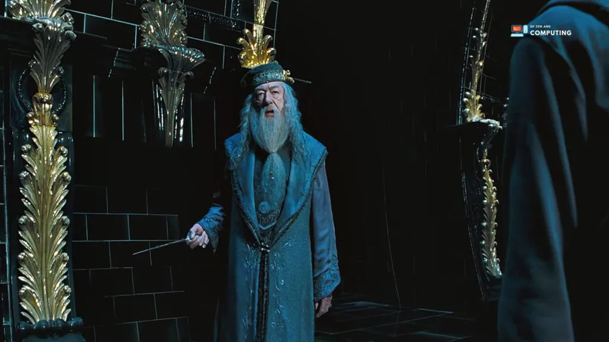

Professor Albus Dumbledore
Professor Albus Dumbledore, the shrewd and benevolent headmaster of Hogwarts School of Witchcraft and Wizardry, is an important figure in the Harry Potter series. Known for his wisdom, experience, and magical abilities, Dumbledore is the mentor and guiding force in Harry's life. As a former student and later teacher at Hogwarts, Dumbledore held various prestigious positions in the wizarding community, including Supreme Mugwump of the International Confederation of Wizards and Chief Warlock of the Wizengamot.
As the series progresses, he is revealed to play a significant role in the fight against the dark forces of Lord Voldemort and his followers. However, Dumbledore's past is not without darkness, and his complicated relationship with his family and his connection to controversial figure Gellert Grindelwald add nuance to his character.
